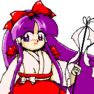
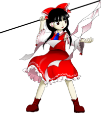
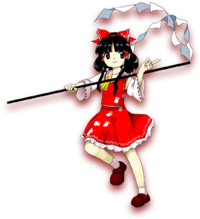

- Welcome to Touhou Wiki!
- Please register to edit. For assistance, check in with our Discord server or IRC channel.
Reimu Hakurei
Reimu Hakurei hakɯɽeː ɽeːmɯ (♫) | |
|---|---|
|
Reimu Hakurei in Wily Beast and Weakest Creature Shrine Maiden of ParadiseMore Character Titles | |
| Species | |
| Abilities |
Ability to Float |
| Occupation | |
| Location | |
Music Themes | |
| |
Appearances | |
| Official Games | |
| |
| Print Works | |
| |
| Music CDs | |
| |
| Miscellaneous Works | |
| |
| Other | |
| |
Reimu Hakurei (博麗 霊夢 Hakurei Reimu) is the main protagonist of the Touhou Project series along with the deuteragonist, Marisa Kirisame. As the shrine maiden of the Hakurei Shrine, she manages the Hakurei Border of Gensokyo and exterminates troublesome youkai.
General Information[edit]
Personality[edit]
Her personality is straightforward, optimistic, and a bit curious. She's quick to anger if offended, but just as quick to offer help to those in need. According to Komachi, Reimu has an innocent heart that can't truly hate anyone.[2] While rather lazy in her free time, she's highly devoted to her duties as the Hakurei Shrine Maiden, resulting in a "shoot first and ask questions later" attitude to youkai extermination. This makes her known to exterminate youkai indiscriminately, regardless of how much of a threat they represent to her or others. One example is Tokiko, who was ambushed by Reimu while she was, in Reimu's own words, "reading and minding her own business".
Apparently, however, she actually helps youkai in trouble when it really matters. For instance, in Silent Sinner in Blue, she kept Reisen (disguised as an earth youkai-rabbit) at her place to help healing her injuries, giving her the futon she uses to sleep and even going to Eientei to inform its residents that a wounded rabbit was at her shrine. She also treated Shinmyoumaru Sukuna well enough after the events of Double Dealing Character that the inchling gave her a matching kimono as a sign of gratitude. Since it was so small, Reimu had to wear it on the back of her head.
It has been stated that Reimu treats everyone the same, whether they are humans, youkai or gods, giving them no particular respect or disrespect. This habit has caused her to inadvertently befriend many youkai she defeats. While she tries to keep youkai away from her shrine, this is because it makes it harder to gather faith from humans rather than because she dislikes them. At the end of the symposium in Symposium of Post-mysticism, when Reimu goes to break it up, Miko notes that though Reimu says she wants to eliminate all the youkai, she actually just wants to attain a peace in Gensokyo that doesn't require violence, like the others present wish.
Abilities[edit]
- Ability to float
While many inhabitants of Gensokyo are capable of flying, Reimu's ability extends beyond that; she is someone who excels at floating through life, displaying a level of oneness with her surroundings that has been compared to a hermit. While she "goes with the flow" Reimu displays superhuman instincts and incredible luck, naturally ending up on the path of least resistance through most situations; conversely, when distracted or acting with impure motives she quickly loses her edge.[3] On one occasion observers saw Reimu dodging an attack "like she was made of air" while Reimu herself saw the attack swerving to avoid her;[4] on another Reimu unknowingly walked across a river without getting wet, by stepping on fish that swam beneath her feet.[5] This also makes Reimu's techniques extremely hard for Marisa Kirisame to learn from, since even Reimu herself has trouble explaining what she's doing. The ultimate expression of this ability is Fantasy Nature, which allows Reimu to float away from reality and become impossible to attack; this was considered too powerful for use as a spell card until Marisa gave it a name and time limit.[6]
- Aura manipulation
It's stated in the omake.txt (おまけ.txt) of Embodiment of Scarlet Devil that Reimu can control the natural spirits of living things, an ability which isn't listed in any source afterwards. No clear instance of this ability has been displayed in canon.
- Powers as the Hakurei Shrine Maiden

As the Hakurei shrine maiden, Reimu can handle the Hakurei Yin-Yang Orbs, and is trained in youkai extermination techniques as well as standard duties like performing blessings. Reimu is also capable of invoking Gensokyo's native gods into her body, but she isn't well-trained enough to do so reliably.
- Barrier techniques
Reimu displays great aptitude with magical barriers (beyond that normally associated with shrine maidens), presumably related to her work in maintaining the Great Hakurei Barrier. Among her techniques are barriers that explode, push enemies (or herself), or act as portals for her other attacks. Reimu is capable of dismantling barriers and seals too complex for Marisa Kirisame[7][8] and Patchouli Knowledge[9] to understand, with what Marisa calls her "cheat technique".[10]
Occupation[edit]
Reimu is the shrine maiden of the Hakurei Shrine, and one of the main "incident resolvers" in Gensokyo. She and others characterize the time she spends at the shrine as largely boring and uneventful. While she is sometimes serious about her duties, she can't seem to get many worshippers at her shrine. It appears that youkai extermination is her only method of earning even a thin salary. Kanako Yasaka has stated that if she was to acquire a tremendous amount of faith, she could become a goddess, but at the moment she acts more like a youkai.
Yukari Yakumo describes Reimu's job as not being that of a youkai exterminator, but rather a "balancer between humans and youkai", who prevents youkai from attacking humans and humans from becoming youkai.[11]
Wild and Horned Hermit depicts Reimu as frequently coming up with various schemes to make money, which generally fail due to her own lack of foresight.
Possessions[edit]
In most of the Touhou games, Reimu uses the Yin-Yang Orbs in combat. In Subterranean Animism they also functioned as communicators with people above the surface. In addition, she usually carries a gohei, sometimes referred to as her purification rod, originally prepared by Rinnosuke Morichika.
She also possesses a great amount of ofuda, sacred paper charms with anti-youkai properties that she uses to fight, seal or exterminate youkai of any kind in her danmaku. Apparently, she can also use them to create barriers and even clones of herself.[12] Like the Yin-Yang Orbs, she uses them in most, if not all, games she has appeared in, either as a normal shot (usually with homing properties) or as bullets for her spell cards. Aside from this, the other projectile she uses is a large collection of throwing needles hidden within her sleeves.
Machinery[edit]
In PC-98 canon, she possesses a robot called Ruukoto, given to her by Yumemi Okazaki as a reward for defeating her. Ruukoto has not been seen outside of Phantasmagoria of Dim.Dream.
Backstory[edit]
Not much is known about Reimu's history prior to the events of the games. Her earliest mention in the Gensokyo timeline is four to five years prior to Chapter 22 of Curiosities of Lotus Asia, which took place in 2006. ZUN does mention in one of his Shanghai Alice Correspondence documents that there was a previous Hakurei Shrine Maiden, and it's generally assumed that there's a line of them.
In Chapter 25 of Wild and Horned Hermit, with night's darkness fast approaching, an annoyed Reimu remarks, "Believe not they will be around for you always: parents and daylight". The quote was thought to imply that Reimu knew her parents, but they're gone and she's rather bitter about it. However, her line was modified from a haiku about the transient, changing nature of things, the original subjects being parents and money (いつまでも / あると思うな / 親と金). In chapter 2 of Curiosities of Lotus Asia, Marisa remarks, "She was an orphan", though the context of this scene suggests that this could just be a throwaway line.
Character Design[edit]
Origin[edit]
Reimu Hakurei as a Shrine Maiden in Highly Responsive to Prayers is based on the character Sayo-chan, who's the protagonist of KiKi KaiKai.[13] The Bakebake are also based on this game. In general, ZUN thought it was a good idea to include a shrine maiden in an STG compared to other typical futuristic STGs simply because it was unusual at the time of her creation.[citation needed]
Name[edit]
Reimu's full name is Reimu Hakurei (博麗 霊夢). The characters for Reimu's last name Hakurei (博麗) literally mean something along the lines of "esteemed companion". The first word Haku (博) means "wide" or "exposition" while Rei (麗) means "lovely", "graceful", or "beautiful". Her first name Reimu (霊夢, lit. "spirit/soul dream") is a relevant Japanese word that refers to a "divine revelation made through dreams".
In the PC-98 game era, her name was written with a slight difference. 博麗靈夢 was changed to 博麗霊夢 from Shuusou Gyoku onwards. "靈" is an uncommon form of "霊" with identical meanings. In the Japanese community, "博麗靈夢" is used to refer to Reimu in the PC-98 era specifically. Incidentally, Chinese (Taiwanese) fans who use the Traditional Chinese characters also adopt this style to refer to Reimu in general (old Japanese kanji form and traditional hanzi are basically identical).
Design[edit]
Reimu is of moderate height. In PC-98 canon, she is depicted as having purple hair and eyes, and she wears a large red ribbon at the back of her head, and red tubes on her sidelocks. From Story of Eastern Wonderland to Mystic Square she wears an outfit like a traditional shrine maiden uniform, with a red hakama over a white kimono.
However, her best known design is that of the Windows era. She has brown-black hair which varies in length and style between games (tending towards long and loose in later works), and her eyes vary from brown to red to even blue depending on the game, but she still wears a red ribbon and matching tubes on her sidelocks. She's still seen in her "shrine maiden uniform", but it now bears little in common with the standard uniform beyond the red-and-white colour scheme (which ZUN has acknowledged[14]). This uniform consists of a red skirt (rather than the standard hakama), a sleeveless red top with a white collar, tied with a yellow ribbon (a red ribbon in Embodiment of Scarlet Devil and Perfect Cherry Blossom, a blue one in Phantasmagoria of Flower View, Subterranean Animism, Hopeless Masquerade, Urban Legend in Limbo and Legacy of Lunatic Kingdom), and a pair of white detached sleeves which expose her armpits and sarashi. Due to the color scheme, she's occasionally called the "red-white shrine maiden"[15]. Her shaman clothing and her purification rod came from Rinnosuke Morichika, but it's unknown who designs them. In chapter 7 of Strange and Bright Nature Deity, she used chopsticks with her left hand, and it was stated that she was left-handed (this statement was deleted in the collected edition), but she held a pen with her right hand in Subterranean Animism. It has been speculated by fans that, assuming this wasn't an art error, she may be ambidextrous or just used to writing with her right hand.
Reimu's Appearances[edit]
Unless specified, Reimu has always held the role of a playable character in the majority of the games.
PC-98 Games[edit]
- Highly Responsive to Prayers
- Main article: Highly Responsive to Prayers Story
A lone shrine sits Far East: the Hakurei Shrine. The powerful seal placed there has worn away, and many strange creatures are starting to come out. Now Reimu, seeking revenge (or possibly just to sate her curiosity), and armed with the shrine's treasure, the Yin-Yang Orbs, goes to the gate to face the non-human creatures inside. The gate will lead to either Makai or Hell depending on which route the player chooses.
- Story of Eastern Wonderland
- Main article: Story of Eastern Wonderland Story
Reimu is training intensely in the harsh extremities of a mountain (or taking it easy), but when she returns to the shrine, she finds it infested by youkai, ghosts and other non-human creatures. With her faithful turtle Genjii and her trusty Yin-Yang Orbs, she sets out to find the one who caused the trouble. Her journey leads her to Rika, the culprit, as well as Mima, who has broken the seal placed on her in Highly Responsive to Prayers, and desires the power of the Yin-Yang Orbs for herself. Reimu is victorious in battle and learns the truth behind the Yin-Yang Orbs.
- Phantasmagoria of Dim.Dream
- Main article: Phantasmagoria of Dim.Dream Reimu's Scenario
Things have been peaceful lately so Reimu has time to kill. When some old ruins appear near the shrine, promising a reward for whoever can manage to make it inside, she decides to enter a sort of tournament to decide who'll go in. This is the first time Reimu appeared as a boss. Assuming she's the player character, she defeats all six opponents and makes it inside to confront Chiyuri Kitashirakawa and Yumemi Okazaki, who have come from the real world in search of proof of magic. As a reward for defeating her, Yumemi gives Reimu the housekeeping robot Ruukoto.
- Lotus Land Story
- Main article: Lotus Land Story Story
Reimu mulls over on how quiet things have been, but soon enough, youkai and spirits start flooding out into Gensokyo again, putting her shrine in danger. She confronts a few, then realizes this must have been the work of something bigger, and decides to go straight to the source of the issue. She makes her way through to the Fantasy World, where she finally meets Yuuka Kazami and defeats her.
- Mystic Square
- Main article: Mystic Square Reimu's Scenario
A large outpour of demons are appearing throughout the land from Makai, and Reimu sets out to exterminate them. She reaches the creator of Makai itself, Shinki, and defeats her in battle. Afterwards, she learns that the youkai and demon overflow in Gensokyo is the fault of some kind of Makai travel agency. Shinki promises to do something about it, but the demons make their way back to the shrine anyway.
Windows Games[edit]
- Embodiment of the Scarlet Devil
- Main article: Embodiment of the Scarlet Devil Reimu's Scenario
A scarlet mist covers the sky of Gensokyo. Reimu, who's annoyed by the mist, sets out to stop the incident. Her travels lead her to the Scarlet Devil Mansion, whose owner, Remilia Scarlet, has spread the mist to try and block out the sun's rays, as she is a vampire. After defeating her, Remilia soon comes to visit her at the shrine, but Reimu has to return to the mansion when an odd rain suddenly appears over it, in order to deal with Flandre Scarlet.
- Perfect Cherry Blossom
- Main article: Perfect Cherry Blossom Reimu's Scenario

Even though it's May, spring shows no signs of coming, leaving the inhabitants of Gensokyo in a cold winter weather that only gets worse. Reimu, noticing cherry petals blowing from the Netherworld, decides to set out and stop the perpetrator from holding spring hostage. After making her way into the Netherworld, she comes to Hakugyokurou, where the ghost Yuyuko Saigyouji spends her time administrating the spirits of the dead. She was gathering the essence of spring to try and make the Saigyou Ayakashi bloom, but Reimu stops her before she completes it. Later on, Yuyuko asks Reimu to go deal with her friend Yukari Yakumo, as she's the one who has been weakening the boundary between Gensokyo and the Netherworld, and she does so, after fierce combat. Yukari then restores the strength of the boundary.
- Imperishable Night
- Main article: Imperishable Night Boundary Team's Scenario
Yukari isn't able to sleep and discovers the full moon is nowhere to be found; it has been replaced with a fake moon, and the night appears to have stopped. She convinces Reimu into investigating the cause with her. After dealing with a few youkai, and Marisa Kirisame in particular, who demands to know why they've created this eternal night, they reach Eientei, a house hidden in the Bamboo Forest of the Lost. Once there, they either confront Eirin Yagokoro or Kaguya Houraisan. Eirin explains that she actually sealed the Earth away from the Moon in order to prevent the Lunarians from taking Kaguya back. Kaguya, however, has tired of hiding, and so challenges Reimu and Yukari to complete her five impossible requests. Once they're defeated, they undo the seal (and thus "return" the real moon to Gensokyo). Afterwards, they all decide to have a moon viewing. Later on, Kaguya sends them into another part of the Bamboo Forest of the Lost as a "test of guts" - but her true intentions are revealed to be trying to annoy Fujiwara no Mokou, another immortal human, and her eternal rival.
- Phantasmagoria of Flower View
- Main article: Phantasmagoria of Flower View Reimu's Scenario
Reimu, who's usually easy-going, is disturbed by the amount of flowers blooming and, not to be the one who shrugs off her duties, goes on to search for answers. She fights through many opponents, including news reporter Aya Shameimaru, in search of the truth. Eventually she reaches Muenzuka, where the shinigami Komachi Onozuka, who appears to have been slacking off on her job to manage said spirits. Eiki Shiki, Yamaxanadu appears after Reimu beats Komachi up, and explains what's happening - an awful lot of spirits of the dead suddenly arrived from the Human World, and they're having trouble accomodating all of them. After a lecture, they do battle, and Reimu emerges victorious. The three of them have a flower viewing later on, where it's explained that as the spirits of the dead cross the Sanzu River, the flowers' blooming will settle down.
- Mountain of Faith
- Main article: Mountain of Faith Reimu's Scenario
Reimu's shrine has become a hotspot for youkai, so she doesn't get many human visitors to do patronage. She receives a foreboding threat from a mysterious human visitor, who demands that the Hakurei shrine be shut down and submit to another god. Reimu, always the optimist, decided to go to Youkai Mountain to face the goddess who's making these threats. She fights her way up to the Moriya Shrine and defeats its shrine maiden, Sanae Kochiya, as well as its resident god, Kanako Yasaka, thus saving her own shrine. Afterwards, Reimu summons everyone to the shrine to watch the autumn leaves, where she vouches for Sanae and Kanako and tells Nitori and Aya that they should invite them over for drinks sometime and generally get along. Sanae also tells Reimu that youkai are a good source of faith. A while later, Marisa brings Reimu the rumor that a second god is actually living at the Moriya Shrine, and she goes to check it out. She then meets Suwako Moriya and defeats her.
- Subterranean Animism
A geyser appears behind Hakurei Shrine, and at first Reimu is happy, since its heat will alleviate the cold of winter. However, evil spirits begin emerging from the earth and loitering about Gensokyo. Reimu is sent to investigate with either Yukari Yakumo, Suika Ibuki, or Aya Shameimaru, depending on what shot type the player chooses. She communicates them throughout her trip via her Yin-Yang Orbs. She heads straight to the Underworld, and fights her way deeper and deeper until reaching the Palace of the Earth Spirits. There she meets Satori Komeiji, whose two pets apparently have something to do with it. Reimu defeats Rin Kaenbyou, then reaches Utsuho Reiuji, who, with her newfound powers, is maintaining the hellfire that heats the Underground, and is responsible for the geysers that let the evil spirits leak out. She defeats her as well, then returns to the surface. Rin starts frequenting the shrine, though mostly for food, and eventually they make the geyser behind the shrine into a hot spring. Utsuho later explains how she came to possess such power, and it seems to point straight towards Kanako and Suwako, so Reimu sets off for the Youkai Mountain again. When she gets to the shrine, however, she meets Koishi Komeiji, who was apparently also looking for who gave Utsuho those powers. Suwako comes out to meet them after they fight and explains it's all part of their "industrial revolution project".
- Undefined Fantastic Object
- Main articles: Reimu A Scenario and Reimu B Scenario
When the treasure ship appears in the skies of Gensokyo, Reimu decides to go after it. She forces her way into it only to discover that there's no treasure inside. However, Minamitsu Murasa tells her they're headed to Makai to revive a "saint" of some sort. She follows them there and meets Byakuren Hijiri, a Buddhist monk that loves youkai and humans equally. That certainly won't do, so Reimu beats her up. She and Byakuren later fly around the skies on the ship, but afterwards the ship is landed and renovated into the Myouren Temple. A little later, she follows up on the strange light that was following her during the journey, and it turns out to be Nue Houjuu, a straggler from Byakuren's group. Reimu defeats her and persuades her to visit the temple.
- Ten Desires
- Main article: Ten Desires Story
A large number of divine spirits appear, threatening the flower viewing, so it's up to Reimu to figure out what's causing it. She visits the Netherworld first; while Yuyuko Saigyouji isn't the culprit, she points the shrine maiden towards the Myouren Temple. After forcing her way to the graveyard, she discovers the spirits all flocking to the Hall of Dreams' Great Mausoleum. Once inside, she defeats the newly resurrected Mononobe no Futo and Toyosatomimi no Miko in battle. When she finds that the temple is bringing in a youkai from the outside world for war against Miko, she finds and defeats Mamizou Futatsuiwa.
- Double Dealing Character
- Main articles: Reimu A Scenario and Reimu B Scenario
After discovering that previously docile youkai have become violent, Reimu learns from Yatsuhashi Tsukumo and Benben Tsukumo that a group of youkai are planning social upheaval. She travels to the Shining Needle Castle and defeats Seija Kijin, who remarks that her allies can become as strong as they want to if they ignore the consequences. After being led by Seija to the inner parts of the castle, she defeats the Miracle Mallet-wielding Shinmyoumaru Sukuna. Afterwards, a magical storm similar to the one caused by the Miracle Mallet rages and Reimu finds that the cause is the tsukumogami Raiko Horikawa, who had successfully changed her source of magic to that of the outside world. After beating Raiko, Reimu lets her go in exchange for not causing any problems in the future.
Spin-offs[edit]
- Immaterial and Missing Power
- Main article: Immaterial and Missing Power Reimu's Scenario
As Reimu makes preparations for an upcoming feast, both humans and youkai are drawn to the feast and are unable to stop partying. Reimu is suspicious of a strange mist that covers Gensokyo and goes to investigate. She roams around, beating up various characters she suspects to be the culprit. She cannot find them; but on the day of the feast, Suika Ibuki finally makes herself known, and Yukari Yakumo shows Reimu to her. Suika soons becomes attached to hanging out at the Hakurei Shrine.
- Shoot the Bullet
Reimu doesn't actually appear in Shoot the Bullet, but instead in a "Special story" that was added to the afterword. It shows that she and Marisa Kirisame are talking about a notebook Marisa found.
- Scarlet Weather Rhapsody
- Main article: Scarlet Weather Rhapsody Reimu's Scenario
The Hakurei Shrine is suddenly destroyed by an earthquake, but upon consulting with Marisa, Reimu finds out that no one else felt it, so there must be something odd going on. She goes around to various suspicious characters, including Komachi Onodzuka, who Reimu initially suspects. However, it's not her, so Reimu ends up making her way towards Heaven, where the celestials Iku Nagae and Tenshi Hinanawi reside. Tenshi reveals she started the incident simply because she was bored watching everyone else getting involved in incidents and wanted to start her own. She also claims she destroyed Reimu's shrine so Reimu would be motivated to resolve the incident; Reimu promptly resolves the incident by defeating Tenshi. Afterwards, Tenshi has a legion of celestials help rebuild her shrine.
- Touhou Hisoutensoku
Reimu, not the main character, is only playable via selectable character to play with. In Sanae's scenario, Reimu fights Sanae in the Underground Geyser Center, but is defeated. Later on, she reads about Hisoutensoku later on in a newspaper in the ending. Also in Meiling's scenario, she doesn't actually appear here, to which is in fact a pseudo-Reimu who was sent by the Giant Catfish to assassinate Hong Meiling in her dreams, but was defeated.
- Double Spoiler
In Double Spoiler, Reimu appeared as a stage Ex target, where she uses a few spell cards and had Aya Shameimaru and Hatate Himekaidou take photos of her and her danmaku.
- Fairy Wars
Reimu appeared in Fairy Wars as a cameo on the Route B1 ending. As Cirno and the Three Mischievous Fairies were terrorising Reimu when she's unaware of who's attacking her, she gets angry and shoots bullets omnidirectionally.
- Hopeless Masquerade
Reimu represents Shintoism in the religious war between Shintoism, Buddhism, and Taoism. She finds that "hope" is being sapped from the village people by Hata no Kokoro and battles her to stop her.
- Impossible Spell Card
- Main article: Impossible Spell Card: Story
After apparently reading the newspaper by the tengu about a mischief-making amanojaku, Reimu becomes one of the many strong youkai and humans to try and stop Seija Kijin, appearing on day 8. She uses spell cards that are considered impossible to dodge.
- Gold Rush
Reimu appears as the boss in the one-stage minigame Gold Rush. Extending from Impossible Spell Card, Seija Kijin somehow acquired the ultimate 10th "rule-breaking" item the Miracle Mallet (Real), which is capable of destroying danmaku, and decides to make use of it by robbing the Hakurei Shrine before its power runs out. Reimu uses three spell cards and non-spell cards on Seija before she's defeated.
- Urban Legend in Limbo
Reimu appears as a playable character in Urban Legend in Limbo. Reimu finds Marisa Kirisame at Kourindou and wanted her to taste some mushrooms for poison, but Marisa attacked her with occult power. Reimu was confused, seeing a bizarre ball of sort. She then met Kasen Ibaraki who seemed to know about the ball. She finds out that Reimu has an Occult Ball, to which she tries to take off her. After she was defeated, she warns that the ball is dangerous. Eventually that night, Reimu encounters a mysterious figure.
Literature[edit]
- Curiosities of Lotus Asia
- Bohemian Archive in Japanese Red
Shortly after the events of Perfect Cherry Blossom, Aya Shameimaru attends a flower viewing at the Hakurei Shrine, where she meets Reimu, who's in a foul mood since no one wants to help her clean up after event. Aya plies her with sake and questions her about the incident, commenting in the article that "Reimu just seems to be a laid-back drunkard". In the follow-up interview, Reimu claims Aya's paper is full of lies and insists her account of the incident is true, though Aya still doesn't recognize Reimu's deeds.
- Silent Sinner in Blue
Sometime not long after the events of Mountain of Faith, Reimu is recruited by the members of the Scarlet Devil Mansion to power their rocket to the moon. The group is defeated by the Watatsuki sisters, who keep Reimu on the moon for a short period of time to clear their names before returning her unharmed to Gensokyo. Unbeknownst to almost everyone involved, their voyage was simply one part of a complex ploy by Yukari to intimidate the residents of Eientei.
- Eastern and Little Nature Deity, Strange and Bright Nature Deity, and Oriental Sacred Place
- Symposium of Post-mysticism
- Main article: Symposium of Post-mysticism Article: Reimu
In Symposium of Post-mysticism, Reimu appeared on part 6 of the symposium. It was stated that Reimu was hiding and hearing over the whole symposium, that was attended by Hieda no Akyuu, Marisa Kirisame, Kanako Yasaka, Byakuren Hijiri and Toyosatomimi no Miko. When she was revealed by Akyuu, Marisa noticed that she had an angry look on her face (although she seems to not be angry with Akyuu). That's because she's not happy with the discussion the group was having, believing that it's all nonsense. She slammed a pile of newspapers in front of them to prove how bad the youkai are and tells them to stop the symposium immediately. She was requested by the humans of the Human Village to stop this as they were aware – and felt uncomfortable – of "non-humans" discussing on changing the way of Gensokyo's life. The group were unhappy with her personality and her way of "fight-first, ask-later" attitude towards youkai, and can't even spend another minute finishing their sake.
There was also an article included, written by Aya Shameimaru, that involved Reimu's broken-down Hakurei Shrine during the events of Scarlet Weather Rhapsody. It stated that it collapsed due to a localised earthquake and that the roof caved into the shrine. Aya found it suspicious that a celestial, that been Tenshi Hinanawi, came to help and re-build it.
- Wild and Horned Hermit
Reimu finds her shrine frequented by a mysterious hermit going by the name of Kasen Ibaraki. Wild and Horned Hermit follows the various escapades and adventures of Reimu and her friends in concurrence to the timeline of the games. Reimu in WaHH is generally short-sighted and obsessed with making a profit.
- Forbidden Scrollery
When book-lender Kosuzu Motoori of the Human Village begins dabbling with demon books, Reimu finds herself frequently having to sort out the incidents caused by the youkai that are released from them. In contrast to Wild and Horned Hermit, which is fairly lighthearted, Forbidden Scrollery depicts Reimu as a shrine maiden who struggles to maintain the image of a protector for the Human Village while maintaining the masquerade set in place by the youkai.
Seihou Project[edit]
- Note: This section is part of the Seihou Project by the Doujin circle "Shunsatsu sare do?".
- Shuusou Gyoku
Reimu has made a guest appearance as the second Extra stage boss of Seihou Project's first work Shuusou Gyoku, a danmaku game series by the junior doujin circle "Shunsatsu sare do?", where ZUN also contributed music and art to the game. It seems like ZUN put her in the game along with Marisa Kirisame. Her title was "Eternal Shrine Maiden" and her theme was "Dichromatic Lotus Butterfly ~ Ancients". To add to this, Yuuka Kazami made a guest appearances in the following work, Kioh Gyoku.
She seems to have no view towards the Seihou World; she doesn't know that there's no vegetation and has no thoughts about scientific machinery. After VIVIT defeated Marisa at the Hakurei Shrine in Gensokyo, Marisa was then thudded by Reimu for fighting at the Hakurei Shrine. Reimu attacked her with two purification rods before she could explain what she was doing. After Reimu lost, VIVIT told her that she was looking for the Holy Grail, causing Reimu to become confused and start asking questions.
Relationships[edit]
Although Reimu often shows up as the main character, she doesn't participate in mundane activities to the extent Marisa Kirisame does, limiting her familiarity with most of Gensokyo's population. Nevertheless, she has interacted with almost every other character that has ever made a physical appearance, with a few exceptions such as the Giant Catfish, Renko Usami, and Maribel Hearn.
Marisa Kirisame[edit]
Reimu's best friend is likely Marisa Kirisame, who spends a lot of her time at the shrine. They're there together the majority of the time in various print works, prologues, and extra stage prologues, hanging out together and discussing or attending the latest events in Gensokyo. Reimu has known Marisa since Story of Eastern Wonderland, where Mima had Marisa fight Reimu. Their friendship may have started soon after that, as in all of the bad endings, Marisa decides she needs to train more, and drags Reimu along to train with her, much to Reimu's chagrin.
Yukari Yakumo[edit]
Despite her antagonistic personality, Yukari Yakumo mentors Reimu by pushing her to increase her spiritual powers, such as learning how to invoke the gods in Silent Sinner in Blue. She also occasionally seeks Reimu's assistance in resolving incidents in Imperishable Night and Subterranean Animism.
Rinnosuke Morichika[edit]
Reimu is familiar with Rinnosuke Morichika, a shopkeeper who owns Kourindou, who she sometimes visits to hang out or for wares (and sometimes shoplifts). She apparently has a large unpaid tab for requested items and services, but denies it since Rinnosuke "never accepts money" (which he denies being the case). Rinnosuke was also the one that originally prepared her purification rod for her use.
Sanae Kochiya[edit]
Despite being the priestess of a rival shrine, Sanae Kochiya is on friendly terms with Reimu and appears frequently in Wild and Horned Hermit alongside Reimu and Marisa. She came on a bit strongly when she and Reimu first met, but she really thought she was helping the Hakurei Shrine out by attempting to get it to switch gods to Kanako Yasaka. After Mountain of Faith, Sanae offered to help Reimu as a fellow shrine maiden to gather faith for the shrine, and she appears to have been friends with Reimu since then. Nonetheless, the two have no qualms about antagonizing the other at times, though these quarrels are usually resolved by the next time they meet.
Genjii[edit]
In the PC-98 canon, Reimu used a turtle as a means for flight until the end of Mystic Square; that turtle was Genjii. Reimu calls him "gramps".
Three Fairies of Light[edit]
Reimu is often the target of pranks by the Three Fairies of Light, and Reimu tends to exterminate them on sight whenever she catches them (unless Marisa's escorting them). As of Oriental Sacred Place, the three fairies moved into a tree near the Hakurei Shrine and become Reimu's neighbors, increasing the amount of pranks even more. Reimu aims to evict the fairies, but cannot find their treehouse, which is actually located on the Hakurei Border. Eventually, in an attempt to befriend Reimu so she'll no longer threaten them, the three fairies challenge her to a battle, reasoning that Reimu tends to befriend many youkai after fighting them. After an intense battle, Reimu finally defeats the fairies (instantly), and points out that their line of reasoning is utterly ridiculous. Despite this, Marisa finds that Reimu befriended the fairies after all, and as of the end of Oriental Sacred Place, the fairies now happily openly spend time at the shrine while helping Reimu out with various chores.
Byakuren Hijiri[edit]
Reimu views Byakuren Hijiri and the Myouren Temple as a rival of sorts to herself and the Hakurei Shrine. In Ten Desires, Toyosatomimi no Miko points out that Reimu is friendly towards Byakuren. Although Reimu says they're religious rivals, she doesn't seem to deny it. In one of her Undefined Fantastic Object endings, Reimu is depressed at how quickly Byakuren's temple is picking up followers compared to her own shrine. By the time of Strange and Bright Nature Deity, Reimu is angry at the temple for stealing away her shrine's followers (ignoring that her shrine never had (m)any followers in the first place), but Byakuren seems unaware of this.
Kasen Ibaraki[edit]
Kasen Ibaraki is a regular at the shrine and acts as a mentor (and sometimes guardian) of Reimu, whom she fears is too concerned with worldly desires.
Kosuzu Motoori[edit]
Kosuzu Motoori, the daughter of the book-lender in the Human Village, has a great deal of respect for Reimu. She is convinced that no harm will come to her from dealing with the youma books, because she is sure that Reimu will come save her if anything happens.
Minor Relationships[edit]
- The Hakurei God
Reimu knows next to nothing about the god dwelling in her shrine, making her unable to provide it with faith despite her efforts. Byakuren stated in one of the endings for Undefined Fantastic Object that the god is mad due to this.
- Ruukoto
In the PC-98 canon, she obtains a robotic maid named Ruukoto as a servant at the end of Phantasmagoria of Dim.Dream though no reference has been made to it since.
- Mima
In the PC-98 canon, Mima is an Akuryou who haunts the surroundings of the Hakurei Shrine, after many confrontations and being resealed by Reimu, she decides to spend her days making fun of the shrine maiden.
- Suika Ibuki
Suika Ibuki, who often freeloads her shrine after the events of Immaterial and Missing Power is also is her ally during Subterranean Animism. Reimu saw Suika's presence as a nuisance at first, but never really bothered with driving her away.
- Aya Shameimaru
Aya Shameimaru, the tengu reporter was also her ally during the events of Subterranean Animism.
- Unnamed kitsune & Unnamed kuda-gitsune
In Wild and Horned Hermit Chapter 8, The Unnamed kitsune offered to help Reimu gain worshipers after being caught disguised as Marisa during a party at Hakurei Shrine. She was, however, deceiving Reimu by letting her use the powers of her kuda-gitsune. Using her ability, they gathered worshipers. Kasen Ibaraki discovered that these fox youkai had been consuming Reimu's willpower and wealth as payment for their help. However, they managed to walk away from the Hakurei Shrine with all her wealth.
Gallery[edit]
Cover of Highly Responsive to Prayers, featuring Reimu
Cover of Story of Eastern Wonderland, featuring Reimu, Marisa & Mima
Cover of Phantasmagoria of Dim.Dream, featuring Reimu & others

Cover of Lotus Land Story, featuring Reimu & Marisa

Cover of Mystic Square, featuring Reimu and Alice

Reimu in Curiosities of Lotus Asia

Reimu in Curiosities of Lotus Asia with cooking apron
Reimu on the chapter 8 cover of Curiosities of Lotus Asia
Reimu on the cover of Seasonal Dream Vision

Reimu on the cover of Bohemian Archive in Japanese Red
Illustration of Reimu in Reisen's article from Bohemian Archive in Japanese Red
Sketch of Reimu from Bohemian Archive in Japanese Red
Reimu in Eastern and Little Nature Deity
Reimu in Extra of the Wind
Reimu artwork from Embodiment of Scarlet Devil
Reimu artwork from Perfect Cherry Blossom
Reimu artwork from Phantasmagoria of Flower View
Reimu artwork from Mountain of Faith
Reimu artwork from Subterranean Animism
Reimu artwork from Undefined Fantastic Object
Reimu artwork from Touhou Hisoutensoku
Reimu artwork from Ten Desires
Reimu artwork from Hopeless Masquerade
Reimu artwork from Double Dealing Character
Reimu artwork from Urban Legend in Limbo

Reimu artwork from Urban Legend in Limbo
Reimu artwork from Legacy of Lunatic Kingdom

Reimu on the cover of Perfect Memento in Strict Sense
Reimu in Strange and Bright Nature Deity
Reimu in Silent Sinner in Blue

Reimu in Silent Sinner in Blue

Reimu in Silent Sinner in Blue
Reimu party outfit in Silent Sinner in Blue
Reimu with swimsuit in Silent Sinner in Blue
Reimu in Oriental Sacred Place
Reimu Ushi no toki mairi costume in Oriental Sacred Place
Reimu in Cage in Lunatic Runagate

Reimu in Cage in Lunatic Runagate

Reimu on the cover of Akyu's Untouched Score vol.5
Reimu's sigil from Grimoire of Marisa
Illustration from Grimoire of Marisa
Reimu on the cover of Symposium of Post-mysticism
Reimu on the Vol. 1 cover of Wild and Horned Hermit

Reimu on the Vol. 6 cover of Wild and Horned Hermit
Reimu on the Vol. 2 cover of Forbidden Scrollery

Reimu on the Vol. 3 cover of Forbidden Scrollery
Reimu's different color palettes from Touhou Hisoutensoku. The middle top corresponds to her second color palette in Scarlet Weather Rhapsody, while the right top corresponds to her Immaterial and Missing Power palette
Reimu's sigil from Touhou Hisoutensoku
Reimu in the Scarlet Weather Rhapsody demo screen

Reimu in the Strange Creators of Outer World Vol. 1 cover

Reimu in the Strange Creators of Outer World Vol. 2 cover

Reimu in the Strange Creators of Outer World Vol. 3 cover

Artwork for the PlayStation 4 version of Urban Legend in Limbo
Omikuji with Reimu's portrait made by ZUN for Reitaisai 15

{kind=link}
{kind=link}
{kind=link}
{kind=link}
{kind=link}
{kind=link}
{kind=link}
{kind=link}
Skills[edit]
| Name | Translated | Comments | Games | Usage | ||
|---|---|---|---|---|---|---|
| Total: 35 | ||||||
| 「ホーミングアミュレット」 | "Homing Amulet" | EoSD PCB MoF UFO TD DDC LoLK WBaWC |
Type A Type A unfocused Type A Type B Unfocused Unfocused Unfocused Unfocused | |||
| 「パスウェイジョンニードル」 | "Persuasion Needle" | Also used as a Spell Card (ISC) | EoSD UFO TD DDC LoLK WBaWC |
Type B Type A Focused Type B focused Focused Focused | ||
| 「博麗アミュレット」 | "Hakurei Amulet" | PCB IaMP PoFV SWR |
Type A focused 236A/B Charge attack Default 236B/C | |||
| 「エクスターミネーション」 | "Extermination" | PCB | Type B focused | |||
| 昇天蹴 昇天脚 |
Ascension Kick | IaMP SWR |
623A/B Default 623B/C | |||
| 警醒陣 | Cautionary Border | IaMP SWR |
214A/B Default 214B/C | |||
| 幻想空想穴 | Fantasy Rift | IaMP | 421A/B | |||
| 「マインドアミュレット」 | "Mind Amulet" | IN | ||||
| 「陰陽玉」 | "Yin-Yang Orb" | PoFV | EX attack | |||
| 「封魔針」 | "Sealing Needle" | MoF | Type B | |||
| 「妖怪バスター」 | "Youkai Buster" | Taoism-aligned | MoF SWR HM ULiL AoCF |
Type C Alternate 236B/C Equippable 6C 6C | ||
| 亜空穴 | Dimensional Rift | SWR | Default 421B/C | |||
| 繋縛陣 | Binding Border | SWR | Alternate 214B/C | |||
| 封魔亜空穴 | Demon-Sealing Dimensional Rift | SWR | Alternate 421B/C | |||
| 抄地昇天脚 | Sliding Ascension Kick | SWR | Alternate 623B/C | |||
| 拡散アミュレット | Spread Amulet | SWR | Alternate 236B/C | |||
| 常置陣 | Permanent Border | SWR | Alternate 214B/C | |||
| 刹那亜空穴 | Instant Dimensional Rift | SWR | Alternate 421B/C | |||
| 「頂門紫針」 | "Purple Needles of Painful Reproach" | Aided by Yukari | SA | Type A shot | ||
| 「非常識の裏側」 | "The Underside of Uncommon Sense" | Aided by Yukari | SA | Type A bomb | ||
| 「鬼神燐火術」 | "Kishin's Will-o'-Wisp Art" | Aided by Suika. Related: Suika's "Kishin's Will-o'-Wisp Art" (Soku) | SA | Type B shot | ||
| 「萃霊花」 | "Foregathering Spiritual Flowers" | Aided by Suika | SA | Type B bomb | ||
| 「深山颪」 | "Wind Deep in the Mountains" | Aided by Aya | SA | Type C shot | ||
| 「鴉の闇」 | "Darkness of the Crow" | Aided by Aya | SA | Type C bomb | ||
| 雨乞祈り | Rain Dance | Soku | Alternate 623B/C | |||
| 即妙神域札 | Quick-Witted Consecration Talismans | Shinto-aligned | HM ULiL AoCF |
Equippable 4C 4C | ||
| 空中昇天脚 | Mid-Air Ascension Kick | Buddhism-aligned | HM ULiL AoCF |
Equippable 8C 8C | ||
| 亜空点穴 | Dimensional Point Rift | Buddhism-aligned | HM ULiL AoCF |
Equippable 2C 2C | ||
| 陰陽弾 | Yin-Yang Shot | Shinto-aligned Not named in ULiL or AoCF |
HM ULiL AoCF |
Equippable Charged B attack Charged B attack | ||
| 前方安全札 | Frontal Defense Talisman | Taoism-aligned | HM | Equippable | ||
| 滞空三角飛び | Floating Wall Jump | Buddhism-aligned | HM ULiL AoCF |
Equippable 5C 5C | ||
| よくばり大幣 | Greedy Ohnusa | DDC | Type A focused | |||
| 博麗大結界の隙間 | Gap in the Great Hakurei Barrier | Aided by Occult Ball | ULiL AoCF |
A+B with Occult Ball A+B with Occult gauge | ||
| ブリージーチェリーブロッサム | Breezy Cherry Blossom | Aided by Okina Matara's back doors; also used by Marisa, Aya and Cirno | HSiFS | Fixed/Sub-type A | ||
| ヴァカンスの生命 | Vitality on Vacation | Aided by Okina Matara's back doors; also used by Marisa, Aya and Cirno | HSiFS | Sub-type E | ||
Spell Cards[edit]
| Name | Translated | Comments | Games | Stage | ||
|---|---|---|---|---|---|---|
| Total: 72+1 | ||||||
| 霊符「夢想封印」 | Spirit Sign "Fantasy Seal" | Related: Divine Spirit "Fantasy Seal" | EoSD PoFV UFO TD HM DDC ULiL LoLK AoCF |
Use Use Use Use Use Use Use Use Use | ||
| 夢符「封魔陣」 | Dream Sign "Evil-Sealing Circle" | Related: Divine Arts "Omnidirectional Demon-Binding Circle" Divine Arts "Omnidirectional Dragon-Slaying Circle" |
EoSD PCB IN IaMP Soku GoM |
Use Use St. 4A: E/N Use Use — | ||
| 霊符「夢想封印 散」 | Spirit Sign "Fantasy Seal -Spread-" | Related: Scattered Spirit "Fantasy Seal -Worn-" | PCB IN |
Use St. 4A: E/N | ||
| 霊符「夢想封印 集」 | Spirit Sign "Fantasy Seal -Concentrate-" | Related: Migrating Spirit "Fantasy Seal -Marred-" | PCB IN |
Use St. 4A: E/N | ||
| 夢符「二重結界」 | Dream Sign "Duplex Barrier" | Related: Dream Land "Great Duplex Barrier" | PCB IN GoM |
Use St. 4A: E/N — | ||
| 霊符「夢想妙珠」 | Spirit Sign "Fantasy Orb" | Related: Divine Spirit "Fantasy Seal" | IaMP IN SWR |
Use Use Use | ||
| 神霊「夢想封印」 | Divine Spirit "Fantasy Seal" | IaMP SWR GoM |
Use Use — | |||
| 神技「八方鬼縛陣」 | Divine Arts "Omnidirectional Oni-Binding Circle" | IaMP IN SWR GoM |
Use St. 4A: H/L Use — | |||
| 宝符「陰陽宝玉」 | Treasure Sign "Yin-Yang Treasured Orb" | Related: Holy Relic "Yin-Yang Kishin Orb" | IaMP SWR |
Use Use | ||
| 宝具「陰陽鬼神玉」 | Holy Relic "Yin-Yang Kishin Orb" | IaMP SWR GoM |
Use Use — | |||
| 符の壱「夢想妙珠連」 | First Card "Fantasy Orb String" | IaMP | Story | |||
| 符の弐「陰陽散華」 | Second Card "Yin-Yang Scattering" | IaMP | Story | |||
| 符の参「魔浄閃結」 | Third Card "Exorcising Border" | IaMP | Story | |||
| 力符「陰陽玉将」 | Power Sign "Yin-Yang King Piece" | IaMP | Story | |||
| 夢戦「幻想之月」 | Dream Battle "Illusionary Moon" | IaMP | Story | |||
| 無題「空を飛ぶ不思議な巫女」 | Untitled "Flying Mysterious Shrine Maiden" | IaMP GoM |
Story — | |||
| 神霊「夢想封印 瞬」 | Divine Spirit "Fantasy Seal -Blink-" | IN IN Soku GoM |
Use St. 4A: N/H/L Story — | |||
| 夢境「二重大結界」 | Dream Land "Great Duplex Barrier" | IN SWR |
St. 4A: H/L Story | |||
| 散霊「夢想封印 寂」 | Scattered Spirit "Fantasy Seal -Worn-" | IN | St. 4A: H/L | |||
| 神技「八方龍殺陣」 | Divine Arts "Omnidirectional Dragon-Slaying Circle" | IN HM ULiL AoCF |
St. 4A: L Use Use Use | |||
| 回霊「夢想封印 侘」 | Migrating Spirit "Fantasy Seal -Marred-" | IN | St. 4A: H/L | |||
| 境界「二重弾幕結界」 | Boundary "Duplex Danmaku Barrier" | Related: Great Barrier "Hakurei Danmaku Barrier" | IN GoM |
St. 4A: E/N — | ||
| 大結界「博麗弾幕結界」 | Great Barrier "Hakurei Danmaku Barrier" | IN | St. 4A: H/L | |||
| 「夢想天生」 | "Fantasy Nature" | IN SWR GoM HM |
LW Use — Use-LW | |||
| 霊符「陰陽印」 | Spirit Sign "Yin-Yang Sign" | PoFV | Use | |||
| 夢符「幻想一重」 | Dream Sign "Fine Line Fantasy" | Not from a game, but contributed by ZUN to the doujin card collection "Touhou Last Word Collection" in 2004. | Touhou Last Word Collection | — | ||
| 霊符「博麗幻影」 | Spirit Sign "Hakurei Illusion" | PoFV | Use | |||
| 珠符「明珠暗投」 | Jewel Sign "Orbs of Light, Cast into Shade" | SWR | Use | |||
| 神技「天覇風神脚」 | Divine Arts "Sky-Conquering Wind God Kick" | Throwback to Highly Responsive to Prayers | SWR | Use | ||
| 祈願「厄除け祈願」 | Prayer "Disaster-Dispelling Prayer" | SWR | Story | |||
| 宝符「踊る陰陽玉」 | Treasure Sign "Dancing Yin-Yang Orbs" | SWR | Story | |||
| 光霊「神霊宝珠」 | Light Spirit "Divine Spirit Orbs" | SWR | Story | |||
| 「境界の内側に潜む霊と不思議な巫女」 | "Lurking Boundary Spirits and the Mysterious Shrine Maiden" | SWR | Story | |||
| 夢符「退魔符乱舞」 | Dream Sign "Wild Exorcism Dance" | Dream Sign inferred from Persuasion Needle/Evil-Sealing Circle | UFO | Use | ||
| 結界「拡散結界」 | Barrier "Expanding Barrier" | Soku | Use | |||
| 御守「妖怪足止め守り」 | Amulet "Youkai Repelling Charm" | Soku | Story | |||
| 霊符「夢想封印 円」 | Spirit Sign "Fantasy Seal -Circle-" | Soku | Story | |||
| 「最も凶悪なびっくり巫女玉」 | "Most Evil Surprise Miko Orbs" | Soku | Story | |||
| お札「新聞拡張団調伏」 | Talisman "Exorcism of the Newspaper Subscription Solicitors" | Only Spell Card with a character's portrait. | DS | St. Ex | ||
| 結界「パパラッチ撃退結界」 | Barrier "Paparazzi-Repelling Barrier" | DS | St. Ex | |||
| 夢符「夢想亜空穴」 | Dream Sign "Fantasy Dimensional Rift" | DS | St. Ex | |||
| 宝具「陰陽飛鳥井」 | Treasure "Yin-Yang Asuka'i" | HM ULiL AoCF |
Use Use Use | |||
| 御札「神社繁盛祈願札」 | Charm "Shrine Prosperity Prayer Talismans" | HM | Story | |||
| 御札「夢幻の高速祈願札」 | Charm "Fantastic High-Speed Prayer Talismans" | HM | Story | |||
| 御札「対妖怪方位除」 | Charm "Anti-Youkai Houi-Yoke Prayer" | HM | Story | |||
| 「信仰心増大祈願の儀」 | "Faith-Augmentation Prayer Ceremony" | Co-owner with Miko | HM | Story | ||
| 「二大宗教九字護身法」 | "Main Two Religions' Nine-Syllable Self-Defense" | Co-owner with Byakuren | HM | Story | ||
| 「面霊気大調伏」 | "Great Menreiki Expulsion" | Co-owner with Miko and Byakuren | HM | Story | ||
| 「最後のトリニティリリージョン」 | "Trinity Religion Finale" | Co-owner with Miko and Byakuren | HM | Story | ||
| 妖器「無慈悲なお祓い棒」 | Bewitched Weapon "Merciless Purification Rod" | DDC | Use | |||
| 神籤「反則結界」 「反則結界」 |
Mikuji "Rule Violation Barrier" "Rule Violation Barrier" |
ISC GR |
St. 8 "St. Ex" | |||
| 「パスウェイジョンニードル」 | "Persuasion Needle" | ISC | St. 8 | |||
| 「天国にいちばん近いお賽銭」 | "The Donation Closest to Heaven" | GR | "St. Ex" | |||
| 「だんまく長者」 | "Danmaku Millionaire" | GR | "St. Ex" | |||
| ＊あんな隙間に巫女がいるなんて！＊ | *To Think There'd be a Shrine Maiden in That Gap!* | ULiL AoCF |
Use-LW Use-LW | |||
| 結界「至る所の青山」 | Barrier "The Home Where One Lays to Rest" | Related: Yukari Yakumo's Home is Where One Lays One's Head (SWR) | ULiL | Story | ||
| 針符「月卿を封じる針」 | Needle Sign "Needles to Seal the Lunar Nobles" | ULiL | Story (Extra) | |||
| 結界「乱暴な世界の裂け目」 | Barrier "Seams of the Tumultuous World" | ULiL | Story (Extra) | |||
| 結界「幻想バウンダリークラック」 | Barrier "Fantasy Boundary Crack" | ULiL | Story (Extra) | |||
| 霊鷹符「鷹による夢想封印ハンティング」 | Spirit Hawk Sign "Fantasy Seal Hunting Done by a Hawk" | Co-owner with Kasen | AoCF | Story | ||
| 風霊符「磐舟かわらけ封印」 | Wind Spirit Sign "Iwafune Kawarake Seal" | Co-owner with Futo | AoCF | Story | ||
| 星霊符「スプリンクルスター封印」 | Star Spirit Sign "Sprinkle Star Seal" | Co-owner with Marisa | AoCF | Story | ||
| 針星符「月卿を封じる針スパーク」 | Needle Spark Sign "Needle Spark to Seal the Lunar Nobles" | Co-owner with Marisa | AoCF | Story | ||
| 「この何度目かの命、夢想封印されるまで」 | "Until This Life, Repeated Countless Times, Gets Fantasy-Sealed Away" | Co-owner with Mokou | AoCF | Story | ||
| 雷霊符「務光の雷弾夢想封印」 | Thunder Spirit Sign "Mukou's Thunder Shot Fantasy Seal" | Co-owner with Kasen | AoCF | Story | ||
| 龍蹴符「ドラゴンズ飛鳥井キック」 | Dragon Kick Sign "Dragon's Asuka'i Kick" | Co-owner with Kasen | AoCF | Story | ||
| 霊符「夢想封印 夢限」 | Spirit Sign "Fantasy Seal -Dreamfinite-" | Used by Reimu's Dream World self | AoCF | Story | ||
| 「完全憑依と夢想封印」 | "Perfect Possession and Fantasy Seal" | Co-owner with Yukari | AoCF | Story | ||
| 「 |
"Boundary of |
Co-owner with Yukari | AoCF | Story | ||
| 「最強最良の異変解決巫女」 | "The Most Powerful and Fortuitous Shrine Maiden of Incident Resolution" | AoCF | Use-Story Final | |||
| 霊符「夢想桜花封印」 | Spirit Sign "Fantasy Cherry Blossom Seal" | Related: Spirit Sign "Fantasy Seal" | HSiFS | Use | ||
| 「盗撮者調伏マスタースパーク」 | "Sneak-Photographer's Exorcism Master Spark" | Co-owner with Marisa | VD | Nightmare Saturday - 2 | ||
| 「背後からの盗撮者調伏」 | "Sneak-Photographer's Exorcism From the Back" | Co-owner with Okina | VD | Nightmare Saturday - 3 | ||
| 「許可無く弾幕は撮影禁止です」 | "Unauthorized Danmaku Photography is Strictly Prohibited" | Co-owner with Yukari | VD | Nightmare Saturday - 6 | ||
Additional Information[edit]
- Reimu is the most frequent character to appear in the Touhou Project games, with Marisa Kirisame coming second. Reimu appears in every Touhou game, two times more than Marisa, who didn't appear in Highly Responsive to Prayers and the minigame Gold Rush.
- Reimu appears on the cover of all five PC-98 games.
- Reimu seems to be scared before and after the boss battle with the Five Magic Stones, making this the only ever time that Reimu was scared and/or afraid of a boss before and after the battle.
- Most of her theme from Lotus Land Story sounds similar to Elis and Kikuri's theme from Highly Responsive to Prayers, "Magic Mirror".
- It was originally stated that she lives alone at the shrine, but other rarely seen characters (Mima and SinGyoku) are known to stay there or near there as well. Even then, Reimu claims that most youkai visitors are nuisances, and she'd prefer to be left alone. Marisa Kirisame seems to be one of the few who she wouldn't drive away.
- Watatsuki no Yorihime from Silent Sinner in Blue – along with VIVIT from the Seihou Project – are thought to be the only ever known characters to have defeated Reimu. However, Yorihime's victory was from a manga, and VIVIT's victory was from a separate series.
- In Imperishable Night, Reimu is the only one whose partner doesn't mention the danger of the full moon.
- Reimu's ultimate technique Fantasy Nature (夢想天生 musou tensei, "innate fantasy gained at birth") is homophonous with the ultimate technique of the Hokuto Shinken school in Fist of the North Star, Musou Tensei (無想転生 musou tensei, "nil-thought rebirth"), and has much the same effect.
- In Touhou Hisoutensoku, if you activate Fantasy Nature successfully in a 3rd round, a remix of "Eastern Mystical Love Consultation" will play which resembles Ai wo Torimodose, the opening theme of the Fist of the North Star anime (an instrumental version of which usually plays whenever Kenshiro is about to win a fight).
- In Touhou Hisoutensoku, one of her alternative palettes looks similar to VIVIT. Also, one of her palettes seems to be another maid homage, Ruukoto, or possibly Sanae Kochiya's colours. The palette also seems to resemble Mima from Highly Responsive to Prayers. Her white/light gray palette seems to resemble Toki from Hokuto no Ken and possibly somewhat similar to her white outfit from the fangame Concealed the Conclusion.
- When playing Yukari's story mode in Scarlet Weather Rhapsody, Reimu breaks down in tears in the ending after Yukari defeats Tenshi and reduces the Hakurei Shrine to rubble for the second time, with Sakuya and Youmu looking on helplessly (although Suika offers to help rebuild it). This marks the first and only time where she's seen crying in a storyline scenario.
- The shrine maiden at the end of Dolls in Pseudo Paradise is probably Reimu. She has Reimu's title, "Shrine Maiden of Paradise" (and her personality), and according to Bohemian Archive in Japanese Red's Music Column, the shrine maiden in the song that accompanies the ending section is Reimu (so basically, this shrine maiden has Reimu's song and title). However, only the shrine maiden at the end is referred to as the shrine maiden of paradise. Thus it's possible that the shrine maiden seen in the first half of the story is a different person altogether.
- A "13th Shrine Maiden" signs off the Gensokyo Record in Perfect Cherry Blossom's prologue. ZUN has stated in an e-mail that the Gensokyo Record is unreliable (for one thing, the writing style of each section shows it was written by a different person each time), thus "there's a high possibility that Reimu isn't the 13th Hakurei shrine maiden." (technically, this also means there's no proof that the person who wrote that section of the record is a shrine maiden at all).
- It' is shown in Oriental Sacred Place that the shrine sometimes gets various donations (including wine) from unknown sources (implied to be from the outside world, as the Hakurei Shrine lies on the border) and Yukari is shown in Oriental Sacred Place to sneak yen donations into the offering box when Reimu isn't looking.
- Although Reimu has successfully resolved the incidents in each major Touhou game, it is possible that her win rate throughout the actual events of the games wasn't 100%. Perfect Memento in Strict Sense states that Reimu likes to request rematches until she finally wins. In game terms, Reimu apparently has had to use a few continues every once in a while, but she still manages to get a good ending.
- In Hidden Star in Four Seasons, Reimu does not defeat Okina Matara at stage 6 initially, being led into a trap leading to her defeat. She challenges Okina to a rematch in the Extra Stage and, after devising a countermeasure, defeats her.
- VIVIT made reference to Reimu in both Kioh Gyoku and Samidare, believing she met her – when talking to Yuuka Kazami – in the former, and referring to her as "red-white" in the latter.
- In Wild and Horned Hermit chapter 46, Reimu experiences a near-death experience because of food poisoning.
- It is also revealed, in the same chapter, that she has trouble of taking care of herself.
Fandom[edit]
Official Profiles[edit]
| ★ 主人公 ・・・ 博麗 靈夢 博麗神社の巫女、生まれ付き霊力はあるが修業不足。武器は最強の 陰陽玉だが、思うように操れずよく振り回される。 それでも霊力があるので、かなりの腕前。 お札による攻撃と、霊力の放出による‘霊撃’、体術。など今回の敵 に対して無効だったので、ちょっと困りもん。 現在、この神社は彼女一人でもっている。 |
Heroine, Reimu Hakurei Shrine maiden of the Hakurei Shrine, She has some spirit-power by nature, but lacks training. Her weapon is the mighty Yin-Yang Orb, but her control is somewhat unstable. |

|
★ 主人公 ・・・ 博麗 靈夢 博麗神社の巫女、生まれ付き霊力はあるが修業不足。お札による攻撃と、霊力の放出による‘霊撃’。それに、‘陰陽玉’の力で妖怪を退治している。 性格は楽天家で、今回の様な非常時でも全然心配などしておらず、自分の霊力で何とかなると思っている。 |
Heroine Reimu Hakurei A shrine maiden of Hakurei Shrine, who possesses natural-born spiritual power but lacks training. She exterminates youkai by attacking with amulets, firing her spiritual power called Spiritual Attack and releasing the power of Yin-Yang Orb. |
|  | ★ 夢と伝統を保守する巫女 ・・・ 博麗 靈夢 博麗神社の巫女、生まれ付き霊力はあるが修業不足。お札による攻撃と、霊力の放出による‘霊撃’。それに、‘陰陽玉’の力で妖怪を退治している。 性格は楽天家である。靈夢の周りでは変なことが色々起こるが、本人はそれを楽しんでいる。 |
Shrine Maiden who Protects Dream and Tradition Reimu Hakurei A shrine maiden of Hakurei Shrine, who has the natural-born spiritual power and lacks training. She exterminates youkai by attacking with amulets, firing her spiritual power called Spiritual Attack and releasing the power of Yin-Yang Orb. |
| ★ 夢と伝統を保守する巫女 ・・・ 博麗 靈夢 博麗神社の巫女、生まれ付き霊力はあるが修業不足。お札による攻撃と、霊力の放出による‘霊撃’。それに、‘陰陽玉’の力で妖怪を退治している。 |
Shrine Maiden who Protects Dream and Tradition Reimu Hakurei The shrine maiden of Hakurei Shrine, who possesses natural-born spiritual power but lacks training. She exterminates youkai by attacking them with amulets, firing her spiritual power in a Spiritual Attack and releasing the power of the Yin-Yang Orb. |
| 博麗 靈夢（はくれいれいむ） ・・ 巫女さん 博麗神社の巫女、生まれ付き霊力はあるが修業不足。お札による攻撃と、霊力の放出による‘霊撃’。それに、‘陰陽玉’の力で妖怪を退治している。 性格は楽天家である。靈夢の周りでは変なことが色々起こるが、本人はそれを楽しんでいる。 |
Shrine Maiden Reimu Hakurei A shrine maiden of Hakurei Shrine, who possesses natural-born spiritual power but lacks training. She exterminates youkai by attacking them with amulets, firing her spiritual power in a Spiritual Attack and releasing the power of the Yin-Yang Orb. |
| ・永遠の巫女 博麗 霊夢（ハクレイ レイム）
|
Eternal Shrine Maiden Reimu Hakurei The shrine maiden of Hakurei Shrine. Talented, but lacks training. Basically, she doesn't like to train. They say she has fought plenty of magicians, evil spirits, youkai and even gods with her strong spiritual power (for no particular reason). |
| ○永遠の巫女 博麗 霊夢（ハクレイレイム） 博麗神社の巫女さんで主人公。のんびりしてるようで、実にのんびりしてる。 |
Eternal Shrine Maiden Reimu Hakurei Charms and the yin-yang orb are her weapons. Additionally, she has the ability to fly in the air. |
| ○永遠の巫女 博麗 霊夢（はくれい・れいむ） 能力：空を飛ぶ程度の能力、霊気を操る程度の能力 主人公です。 時間的な流れでは前作から大して経ってなく、年齢も変化ありません。 意味も無く巫女さんです。というか東方は巫女さんＳＴＧなんで巫女さ んです。本末転倒気味。 今回の衣装は巫女さんらしいゴテゴテ感もなく、非常にシンプルな上に 巫女さんっぽくないです。本当に巫女さんなんでしょうか？ まさに「そこの紅白」って感じです。 |
Eternal Shrine Maiden Reimu Hakurei Abilities: Flying in the air, manipulating auras The protagonist. Chronologically, this title isn't too far from the previous title, thus her age stays the same as before. There is nothing special about her being a shrine maiden. Or rather, she's a shrine maiden only because the Touhou series has become the "Shrine Maiden Shooting Game" series. It feels like the cart has been placed before the horse to me. This time, her outfit isn't overly intricate like typical shrine maiden clothing, but has become quite simple and only remotely resembles that of a shrine maiden. Is she really a shrine maiden? She's more like "You, red-white!" in my opinion. |
| ○楽園の素敵な巫女 博麗 霊夢（はくれいれいむ） 博麗神社の巫女さんで主人公。頭が普通そうだが、実は春満開。 |
Wonderful Shrine Maiden of Paradise, Reimu Hakurei Hakurei Shrine's shrine maiden, and the protagonist. Her mind might appear normal, but in fact it's like spring in full bloom. Charms and the yin-yang orb are her weapons. Additionally, she has the ability to fly in the air.
|
| ○楽園の素敵な巫女 博麗 霊夢（はくれいれいむ） |
Wonderful Shrine Maiden of Paradise Reimu Hakurei She possess the ability to mainly fly in the air. Basically, she's a shrine maiden. The shrine maiden of Hakurei Shrine, which is located on the boundary of Gensokyo. Only those of the Hakurei have rules to follow in Gensokyo. Therefore, Reimu always wears clothes that's apparently some kind of uniform (she's supposed to have many other rules too, though...). Her daily routine consists of wearing red-white, staring at Gensokyo's sky from the edge of Gensokyo, and drinking tea. By nature, Reimu can use various mysterious powers, but she doesn't use them or boast about them. Everything is, as is, after all. |
| ○楽園の素敵な巫女 博麗 霊夢（はくれいれいむ） |
Wonderful Shrine Maiden of Paradise Reimu Hakurei Species: Human A typical shrine maiden from Hakurei Shrine. She always lives on ideas off the top of her head, and doesn't consider something seriously. The only thing she does that actually resembles a shrine maiden's duties is enjoying tea and life on the veranda. She's quite simple-minded, thus when she's angry she's angry, and when she smiles she smiles. Her open personality makes her well-liked by both humans and youkai. Due to that, many people stay close to the shrine. She lacks training in both melee and spells (or rather, she rarely does them), but she covers that up with the numerous talents she's born with. So she's quite tough, enough to make you wonder if she's really a human. While she warps or uses guided shots, it's all straight from her perspective. What a mean shrine maiden. |

|
○楽園の素敵な巫女 博麗 霊夢（はくれいれいむ） 博麗神社の巫女さん。 幻想郷の境にある（恐らく）由緒正しき博麗神社の巫女さん。 |
Wonderful Shrine Maiden of Paradise, Reimu Hakurei Hakurei Shrine's Shrine Maiden. She's the shrine maiden of the Hakurei Shrine, which is located at the edge of Gensokyo and (possibly) has ancient and honourable origins. Her weapons are amulets and a Yin-Yang orb. She is also preferred by mosquitoes.
|
|
|
○楽園の素敵な巫女 博麗 霊夢（はくれい れいむ） |
Wonderful Shrine Maiden of Paradise Reimu Hakurei Species: Human The all-too-familiar shrine maiden of the Hakurei Shrine located on the border of Gensokyo. The Hakurei Shrine itself exists simultaneously in both Gensokyo and the Outside World. She treats everyone fairly and equally, which makes her well-liked by even the feared being such as youkai. On the flip side, she doesn't see anyone as a comrade. Since there are a great number of humans and youkai around her, there are instances where she works together with them, but even so, she usually does things by herself alone. She might just truly be a cold-hearted kind of human... |
|
|
○４面ボス 楽園の素敵な巫女 博麗 霊夢（はくれい れいむ） |
Wonderful Shrine Maiden of Paradise Reimu Hakurei Species: Human The all-too-familiar shrine maiden. The morning that she was expecting to see after a full night's sleep didn't greet her. She thought that something very strange was going on, so she left the shrine to investigate. It's not unusual for her to go out at night, but going out at midnight just after having taken a full night's rest was most unusual. Anyway, nights always make her sleepy, so she'll be going back to bed once the issue is resolved. She followed a trail of power into a bamboo forest, and what she found were very familiar faces... |
| ○楽園の素敵な巫女 博麗 霊夢（はくれいれいむ） 博麗神社の巫女さん。 |
Wonderful Shrine Maiden of Paradise Reimu Hakurei The Shrine Maiden of Hakurei Shrine. |
| ○楽園の巫女 博麗 霊夢（はくれい れいむ） |
Shrine Maiden of Paradise - Reimu Hakurei The all-too-familiar shrine maiden of the Hakurei Shrine. |

|
博麗 霊夢 種族 ： 人間 職業 ： 巫女さん 住家 ： 博麗神社 能力 ： 空を飛ぶ程度の能力 性格 ： 呑気で感情豊か。浮世離れしている。 |
Shrine Maiden of Paradise Reimu Hakurei
Occupation: Shrine Maiden Place of residence: Hakurei Shrine Ability: Flying in the air. Personality: Carefree and sentimental. Not too attached to the world of the living. |

|
博麗霊夢 自由奔放な人間 おなじみ博麗神社の巫女さん。神 |
Reimu Hakurei
The freewheeling human The familiar shrine maiden of the Hakurei Shrine. She appears pondering, like every other day, of how to get more visitors of her shrine. It's not that she's a clump of greed, but that she's only acting natural. She doesn't differentiate between humans and youkai. |
| DATA
|
DATA
|

|
神秘！結界の巫女
博麗 霊夢 オカルト「隙間女」 毎度お馴染み幻想郷の素敵な巫女さん オカルトアタックは「博麗大結界の隙間」 |
Arcane! Shrine Maiden of Barriers
Reimu Hakurei Occult "Gap Woman" Her Occult Attack is “The Gap in the Great Hakurei Barrier”. |
|  | ○楽園の巫女 博麗 霊夢（はくれい れいむ） 種族：人間 毎度お馴染みの巫女さん。博麗神社の巫女さん。 ついに本格的に月の使者が現われた。 今回はミスの許されない闘いを強いられる事となる。 |
Shrine Maiden of Paradise Reimu Hakurei Species: Human The all-too-familiar shrine maiden of the Hakurei Shrine. The lunar emissaries have at last arrived for real. This time, she's forced to fight a battle with no room for error. |
|
|
自由奔放で無計画な巫女
博麗 霊夢 「肉体も精神も入れ替わる 博麗神社の紅白な巫女さん 仙人と完全憑依異変の調査へ向かうものの 決闘では緩急の強い弾幕と体術を武器に立ち回るバランス型 |
Freewheeling and Haphazard Shrine Maiden
Reimu Hakurei "One's body and mind both switch places. The red-and-white shrine maiden of the Hakurei Shrine. She sets out with a certain hermit to investigate the Perfect Possession incident, but quickly realizes that the incident can't be dealt with via usual means. In battle, she's a balanced fighter armed with both danmaku and melee moves of various speeds. |
|  | ○楽園の素敵な巫女 博麗 霊夢（はくれい れいむ） 種族：人間 毎度お馴染みの巫女さん。博麗神社の巫女さん。 地獄から大量の動物霊が攻め込んできた。 |
Wonderful Shrine Maiden of Paradise Reimu Hakurei Species: Human The all-too-familiar shrine maiden of the Hakurei Shrine. Beast spirits had begun to invade from Hell en masse. |
Official Sources[edit]
- 1997/08/15 Highly Responsive to Prayers - 靈異伝.TXT
- 1997/08/15 Story of Eastern Wonderland - 封魔録.txt
- 1997/12/29 Phantasmagoria of Dim. Dream - 夢時空.TXT
- 1998/08/14 Lotus Land Story - 幻想郷.TXT
- 1998/12/30 Mystic Square - 怪綺談.TXT
- 2002/08/11 Embodiment of Scarlet Devil - Reimu's Scenario & Extra Stage; おまけ.txt (official profile); Manual
- 2003/08/17 Perfect Cherry Blossom - Reimu's Scenario & Extra Stage; キャラ設定.txt (official profile); Manual
- 2004/08/15 Imperishable Night - Border Team's Scenario & Extra Stage; キャラ設定.txt (official profile); Manual
- 2004/12/30 Immaterial and Missing Power - 上海アリス通信.txt
- 2005/08/11 Bohemian Archive in Japanese Red - Article and Interview: Reimu
- 2005/08/14 Phantasmagoria of Flower View - Playable Character; キャラ設定.txt (official profile); Manual
- 2005/08/25 ~ 2006/03/25 Eastern and Little Nature Deity
- 2005/10/01 Seasonal Dream Vision/A Beautiful Flower Blooming Violet Every Sixty Years
- 2006/05/26 ~ 2009/01/26 Strange and Bright Nature Deity
- 2006/12/27 Perfect Memento in Strict Sense - Shrine Maiden of Paradise: Reimu Hakurei
- 2007/06/08 ~ 2009/04/09 Silent Sinner in Blue
- 2007/08/17 Mountain of Faith - Reimu's Scenario & Extra Stage; Manual (official profile)
- 2007/10/22 Inaba of the Moon and Inaba of the Earth - Chapter 5
- 2008/05/25 Scarlet Weather Rhapsody - chara.html (official profile)
- 2008/08/16 Subterranean Animism - Reimu & Yukari/Suika/Aya's Scenario & Extra Stage; キャラ設定.txt (official profile)
- 2009/03/25 ~ 2009/06/25 Cage in Lunatic Runagate - Chapter 8
- 2009/05/26 ~ present Oriental Sacred Place
- 2009/07/28 The Grimoire of Marisa - Reimu Hakurei's Spell Cards
- 2009/08/15 Undefined Fantastic Object - Reimu's Scenario & Extra Stage; キャラ設定とエキストラストーリー.txt (official profile)
- 2010/07/24 ~ present Wild and Horned Hermit
- 2011/08/13 Ten Desires - Reimu's Scenario & Extra Stage; キャラ設定とエキストラストーリー.txt (official profile)
- 2012/10/26 ~ present Forbidden Scrollery
- 2013/05/26 - Hopeless Masquerade - Playable character
- 2013/08/12 - Double Dealing Character - Playable character
- 2014/05/11 - Impossible Spell Card - Day 8 Boss
- 2014/11/16 - Gold Rush - Stage boss
References[edit]
- ↑ Lotus Land Story: th4_02.txt
- ↑ Wild and Horned Hermit chapter 5
- ↑ Wild and Horned Hermit: Chapter 18
- ↑ Curiosities of Lotus Asia: Chapter 3
- ↑ Eastern and Little Nature Deity: Chapter 2
- ↑ The Grimoire of Marisa: Reimu Hakurei's Spell Cards
- ↑ Perfect Cherry Blossom: Marisa's scenario
- ↑ Perfect Cherry Blossom: Reimu's scenario
- ↑ Oriental Sacred Place: Chapter 15
- ↑ Forbidden Scrollery: Chapter 7
- ↑ Forbidden Scrollery/Chapter 53
- ↑ Scarlet Weather Rhapsody - Skill Card: Instant Dimensional Rift
- ↑ kikikaikai.gif
- ↑ ZUN's reply to messages on the former Gensou Bulletin Board 3
- ↑ Embodiment of Scarlet Devil - Extra stage
{kind=link}
| This page is part of Project Characters, a Touhou Wiki project that aims to write proper descriptions for all official characters of Touhou Project. Please keep the character page guidelines in mind when contributing. |